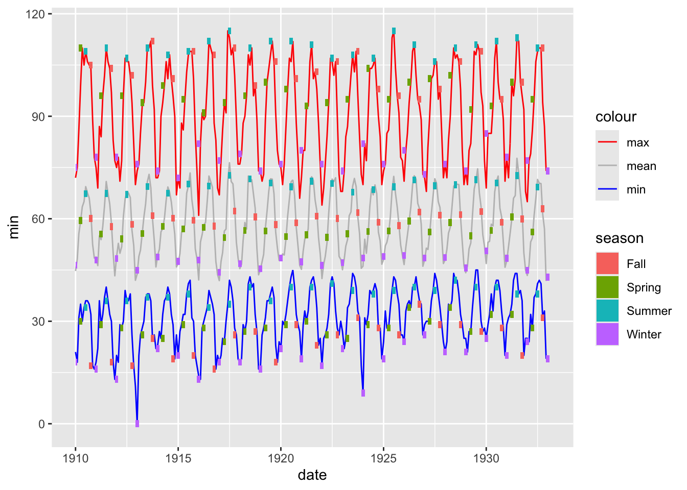
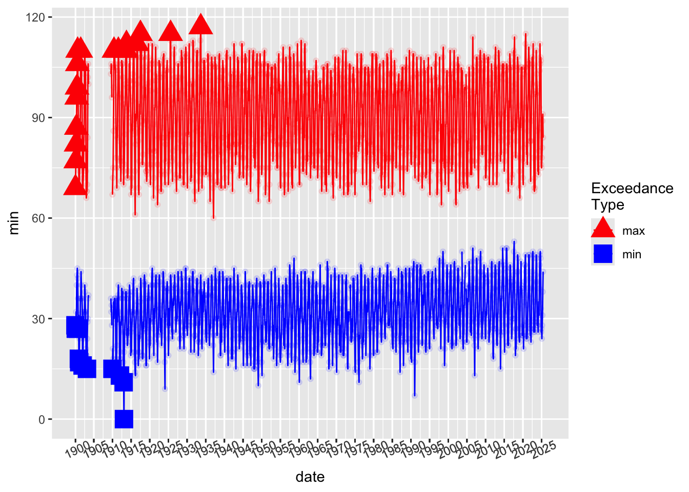
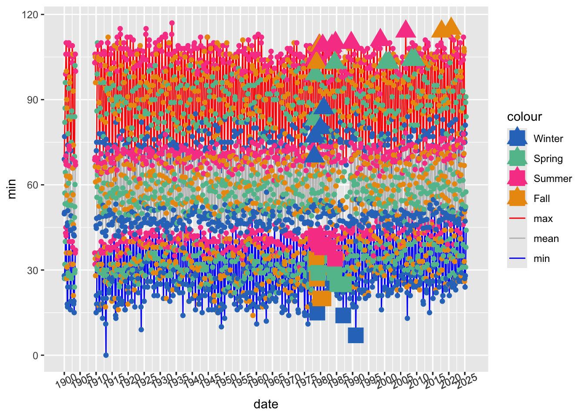

library(tidyverse)
source("code/cummax_ignore_na.R")
source("code/cummin_ignore_na.R")Data Sourcing and Processing
This file will detail the data source and pre-processing, as well as a missing data report, a summary statisics for whole series. For this stage of the project, we only use the tidyverse and lubridate packages.
Data Source
Three data sets were downloaded from the NOAA National Weather service NOWData tool.
All data sets are for Paso Robles, CA, from the start of data collection (“por”) to present (2025).

We requested the monthly maximums, monthly minimums, and monthly averages.
 After clicking “Go”, a data table pops up. We copied it and pasted into Microsoft Excel, removed the summary rows included at the bottom, then saved as a csv.
After clicking “Go”, a data table pops up. We copied it and pasted into Microsoft Excel, removed the summary rows included at the bottom, then saved as a csv.
This process yielded 3 csv files: paso_max.csv, paso_min.csv, and paso_avg.csv.
Monthly data
Read in, combine, and process data from the csv files obtained above.
This gets us three monthly time series, which we can visualize.
cols <- c("max" = "red", "min" = "blue", "mean"="grey", "Winter" = "#2f77c3", "Spring" = "#61bf9a", "Summer" = "#f94994", "Fall" = "#eb9911")
monthly_weather %>%
ggplot(aes(x = date)) +
geom_line(aes(y = min, col = "min")) +
geom_line(aes(y = max, col = "max")) +
geom_line(aes(y = mean, col = "mean")) +
scale_color_manual(values = cols)
Since there is a big gap in the data after the beginning of the series, we will start the sonification after that period.
monthly_weather <- monthly_weather %>% filter(year>1909)
monthly_weather %>%
ggplot(aes(x = date)) +
geom_line(aes(y = min, col = "min")) +
geom_line(aes(y = max, col = "max")) +
geom_line(aes(y = mean, col = "mean")) +
scale_color_manual(values = cols)
Seasonal Data
Also, since the data is a bit noisy, let’s look at some seasonal summaries for each series as well.
monthly_weather <- monthly_weather %>%
mutate(
season = case_when(
month %in% c("Dec", "Jan", "Feb") ~ "Winter",
month %in% c("Mar", "Apr", "May") ~ "Spring",
month %in% c("June", "July", "Aug") ~ "Summer",
month %in% c("Sept", "Oct", "Nov") ~ "Fall"
),
season_color = case_when(
month %in% c("Dec", "Jan", "Feb") ~ "#2f77c3",
month %in% c("Mar", "Apr", "May") ~ "#61bf9a",
month %in% c("June", "July", "Aug") ~ "#f94994",
month %in% c("Sept", "Oct", "Nov") ~ "#eb9911"
),
season_year = case_when(
month == "Dec" ~ year + 1, # December belongs to *next* Jan/Feb
.default = year
),
season_label = paste(season, season_year)
) %>%
group_by(season, year) %>%
ungroup()
monthly_weather <- monthly_weather %>%
group_by(season_label, season_year) %>%
mutate(
xmin = min(date),
xmax = max(date),
seas_avg = mean(mean),
seas_max = max(max),
seas_min = min(min),
season_color = unique(season_color),
season = unique(season)
) %>%
ungroup()
monthly_weather # A tibble: 1,392 × 15
year month min mean max date season season_color season_year
<int> <chr> <int> <dbl> <int> <date> <chr> <chr> <dbl>
1 1910 Jan 21 44.7 72 1910-01-01 Winter #2f77c3 1910
2 1910 Feb 18 48.2 75 1910-02-01 Winter #2f77c3 1910
3 1910 Mar 31 55.6 86 1910-03-01 Spring #61bf9a 1910
4 1910 Apr 35 59.3 99 1910-04-01 Spring #61bf9a 1910
5 1910 May 30 63.5 110 1910-05-01 Spring #61bf9a 1910
6 1910 June 34 65 105 1910-06-01 Summer #f94994 1910
7 1910 July 36 69.4 109 1910-07-01 Summer #f94994 1910
8 1910 Aug 36 67.6 106 1910-08-01 Summer #f94994 1910
9 1910 Sept 35 66.1 105 1910-09-01 Fall #eb9911 1910
10 1910 Oct 32 61.7 104 1910-10-01 Fall #eb9911 1910
# ℹ 1,382 more rows
# ℹ 6 more variables: season_label <chr>, xmin <date>, xmax <date>,
# seas_avg <dbl>, seas_max <int>, seas_min <int>## visualizeWe can visualize the seasonal data over the monthly data:
ggplot(monthly_weather %>% filter(year <1933), aes(x = date)) +
geom_line(aes(y = min, color = "min")) +
geom_line(aes(y = max, color = "max")) +
geom_line(aes(y = mean, color = "mean")) +
geom_rect( aes(xmin = xmin, xmax = xmax,
ymin = seas_avg-1, ymax = seas_avg+1,
fill = season), inherit.aes = FALSE) +
geom_rect(aes(xmin = xmin, xmax = xmax,
ymin = seas_max-1, ymax = seas_max+1,
fill = season), inherit.aes = FALSE) +
geom_rect(aes(xmin = xmin, xmax = xmax,
ymin = seas_min-1, ymax = seas_min+1,
fill = season), inherit.aes = FALSE) +
scale_color_manual(values = cols)
or, on its own
ggplot(monthly_weather, aes(x = xmin)) +
geom_line(aes(y = seas_min, color = "min")) +
geom_point(aes(y = seas_min, color = season)) +
geom_line(aes(y = seas_max, color = "max")) +
geom_point(aes(y = seas_max, color = season)) +
geom_line(aes(y = seas_avg, color = "mean")) +
geom_point(aes(y = seas_avg, color = season)) +
scale_color_manual(values = cols) +
scale_x_date(labels = monthly_weather$season_year[monthly_weather$season == "Winter" & monthly_weather$season_year %%5 ==0],
breaks = monthly_weather$xmin[monthly_weather$season == "Winter"& monthly_weather$season_year %%5 ==0]) +
theme(axis.text.x = element_text(angle = 25))
Exceedances
When the seasonal max or min reaches a new high or low, indicate this with a true/false.
We can either set this to start from the beginning of the series, or start the “counter” at a certain time. Since we will have three parts to our music where the last part contains the most information (the last part).
out <- monthly_weather %>%
group_by(season) %>%
arrange(date) %>%
mutate(
start_flag = year > 1977,
cummax = cummax_ignore_na(max, start_flag),
cummin = cummin_ignore_na(min, start_flag),
new_max = cummax == max,
new_min = cummin == min
) %>%
ungroup()
monthly_weather$new_max <- out$new_max
monthly_weather$new_min <- out$new_min
ggplot(monthly_weather, aes(x = date)) +
geom_line(aes(y = min, color = "min")) +
geom_point(aes(y = min, color = season)) +
geom_line(aes(y = max, color = "max")) +
geom_point(aes(y = max, color = season)) +
geom_line(aes(y = mean, color = "mean")) +
geom_point(aes(y = mean, color = season)) +
geom_point(data = filter(monthly_weather, new_max),
aes(x = date, y = max, color = season), size = 6, shape = 17) +
geom_point(data = filter(monthly_weather, new_min),
aes(x = date, y = min, color = season), size = 6, shape = 15) +
scale_color_manual(values = cols) +
scale_x_date(labels = monthly_weather$season_year[monthly_weather$season == "Winter" & monthly_weather$season_year %%5 ==0],
breaks = monthly_weather$xmin[monthly_weather$season == "Winter"& monthly_weather$season_year %%5 ==0]) +
theme(axis.text.x = element_text(angle = 25))
Missing Data
As you will hear (and see) in the animation, there are occasionally missing data points, resulting in silence!
Output data
save(monthly_weather, file = "data/monthly_weather")
#save(seasonal_weather, file = "data/seasonal_weather")
#save(seasonal_exceedances, file = "data/seasonal_exceedances")